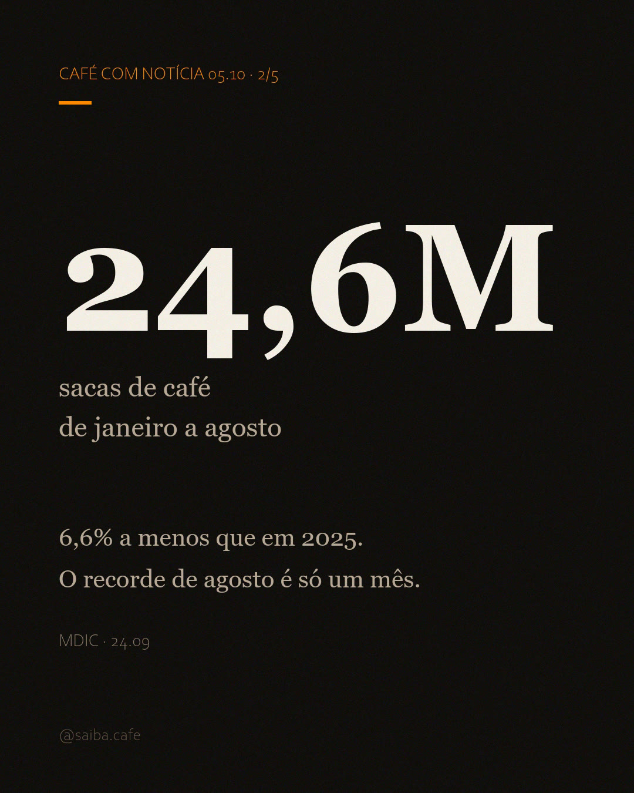
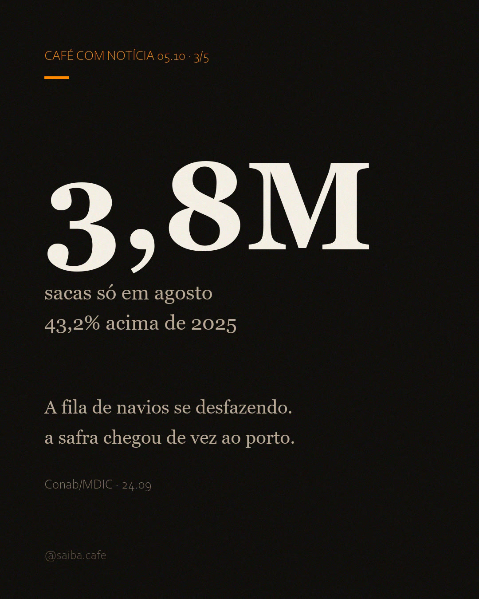
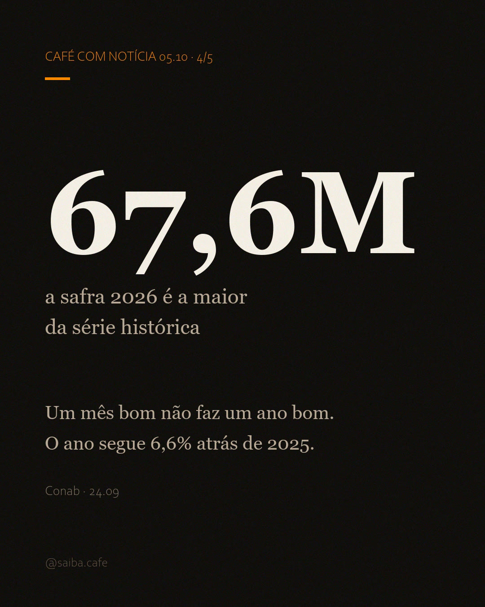

Dois números que parecem brigar
O que saiu do porto de janeiro a agosto aponta para baixo: 24,6 milhões de sacas, 6,6% a menos que no mesmo período de 2025. O que saiu em agosto, sozinho, aponta para o céu: 3,8 milhões de sacas, a maior marca para um mês de agosto em toda a série histórica, alta de 43,2% sobre agosto de 2025. Cada um tem sua fonte; nenhum dos dois está errado. A história está em como eles se encaixam.
O ano atrás de 2025
O acumulado de janeiro a agosto é o retrato de um ano que começou devagar. Com 6,6% a menos que em 2025, o país carrega na esteira cerca de 1,7 milhão de sacas a menos (conta da casa sobre o dado do MDIC: o mesmo período de 2025 fechou em torno de 26,3 milhões de sacas). Não é crise, é atraso: a safra que sustenta esse fluxo só atingiu volume cheio agora, e a esteira do primeiro semestre seguiu dependente do grão da safra anterior.
O detalhe muda a leitura do recorde que vem na sequência: um mês forte não apaga oito meses fracos. Ele compensa parte deles.
24,6M
sacas de 60 kg exportadas de janeiro a agosto de 2026
−6,6%
sobre o mesmo período de 2025
~1,7M
sacas a menos na esteira (conta da casa sobre o dado do MDIC)

O recorde de agosto
Agosto embarcou 3,8 milhões de sacas de 60 kg: 43,2% mais que em agosto de 2025 e 25,8% mais que em julho. Em peso, são 228 mil toneladas de café atravessando os portos num único mês (conta da casa: 3,8M × 60 kg; o número original vem da fonte citada abaixo). Na série histórica do mês, é recorde.
3,8M
sacas de 60 kg exportadas em agosto de 2026, recorde do mês
+43,2%
sobre agosto de 2025
+25,8%
sobre julho de 2026

A fila de navios se desfazendo
A explicação cabe numa frase: a safra recorde chegou ao porto. Quando a Conab fechou o 3º Levantamento, em 24.09, 99% da área já estava colhida e a produção somou 67,6 milhões de sacas, alta de 19,6% em ano de bienalidade positiva. O arábica responde por 48,2 milhões (+34,8%); o conilon, por 19,4 milhões (−6,6%). Só Minas Gerais entregou 34,96 milhões de sacas da variedade arábica.
Exportação é fluxo, não estoque. A safra de 2025 foi menor, o primeiro semestre carregou o volume curto, e o grão da safra 2026, a maior da série histórica da Conab, só agora passa pelo porto com volume cheio. O recorde de agosto é a fila de navios se desfazendo: a esteira compensando o que faltou no resto do ano.

As janelas seguem valendo
A matéria de 02.10 explicou por que não se soma um número no outro: 3,8M é fluxo mensal de exportação, 67,6M é a safra no ano civil e 71,9M é o ano-cafeiro de julho de 2026 a junho de 2027, estimativa do USDA. Cada fonte, sua janela, e a da casa não abre outra. A régua vale para ler o recorde de hoje: o 3,8M é fluxo, o 67,6M é safra, e um mês bom não faz um ano bom.
O preço já reflete o volume
O indicador do arábica do Cepea/Esalq fechou setembro a R$ 1.576,85, queda de 9,81% no mês. A queda acumulada chegou a 10,97% em 28.09, antes de três altas seguidas no fim do mês (+1,19%, +0,48% e +0,82% de 28 a 30.09) devolverem parte do caminho. A semana abriu quase parada: R$ 1.572,01 em 02.10, queda de 0,34% no dia, com US$ 301,33 a saca (fonte: Cepea/Esalq, 02.10).
O robusta fez a travessia contrária: R$ 992,41 em 02.10, alta de 2,05% no dia e de 0,70% no mês (fonte: Cepea/Esalq, 02.10). O detalhe que chama atenção: o conilon foi a única safra a encolher no levantamento da Conab (−6,6%), e é justamente o indicador robusta o único a fechar o mês em alta.
Quem ganha, quem perde
Ganha
- Portos e exportadoras: fluxo recorde justamente no pico da movimentação da safra.
- Quem compra: pela primeira vez no ano, a direção do indicador do arábica virou, e setembro fechou 9,8% mais barato no Cepea.
- O produtor de conilon: safra menor (−6,6%) e preço de alta (+0,70% no mês).
Perde (ou paga o preço)
- O produtor que segurou grão: o arábica caiu 9,8% no mês, e a espera custou caro para quem aguardava o preço alto do começo do ano.
- Quem apostou no "safra recorde = café barato" cedo demais: as cotações caem devagar, segundo a própria Conab.
- Torrefações menores: o mercado interno disputa o mesmo grão com quem paga em dólar no pico da exportação.
Por que importa pra você
Se você bebe
O pacote demora a refletir, mas a direção virou. Setembro fechou com o arábica 9,8% mais barato no Cepea, e a semana abriu estável em torno de R$ 1.572. A exportação recorde explica por que o alívio não chega de uma vez: 3,8M de sacas num mês são grão saindo do país, e o mercado interno compete com quem paga em dólar. Segundo a própria Conab, as cotações internacionais seguem sob pressão de baixa com a safra brasileira entrando, mas sem reduções expressivas esperadas: os estoques estão baixos e o consumo mundial continua subindo.
Se você produz
Agosto premiou quem ainda tinha café guardado. Setembro começou a devolver o preço que a espera custou: 9,8% de queda no mês. A janela de venda da safra 2026 está aberta, mas o calendário de concorrência não perdoa quem espera demais: a nota da Conab aponta a colheita do Vietnã e o aumento sazonal da produção colombiana no último trimestre como os próximos grãos a chegar ao mercado. Quem pode esperar, espera; quem precisa vender, olha o câmbio.
Se você investe
O recorde de agosto é dado do passado. O risco vem pela frente: a Conab lista as previsões de El Niño no ciclo 2026/27 como fator que sustenta preços e pode afetar a produção em vários países. Com safra recorde já precificada e estoques baixos, o que move o preço daqui em diante é clima. E clima não entra em levantamento.
O que vem pela frente
No quadro mundial do USDA, a produção deve bater 189,7 milhões de sacas (+6,1%) e o consumo, 179,7 milhões (+3,6%) em 2026/27, com o Brasil respondendo por 71,9 milhões no ano-cafeiro, recorde da série. Sobra grão no papel, mas com estoques baixos e El Niño rondando as lavouras a sobra não chega inteira ao desconto no balcão. Na prática, o café que você toma segue disputado, e o calendário agora é dos rivais: Vietnã e Colômbia entram no segundo semestre.
chuta aí: você já viu café mais barato na prateleira? chuta o preço do seu quilo essa semana.
Fontes
- Conab: nota oficial "Produção de café é estimada em 67,6 milhões de sacas, influenciada por bienalidade positiva em 2026" (3º Levantamento Safra 2026), 24.09.2026: safra 67,6M (+19,6%), arábica 48,2M (+34,8%), conilon 19,4M (−6,6%), colheita 99% da área e Minas Gerais 34,96M de arábica; dados de exportação compilados do MDIC (agosto 3,8M; +43,2% vs. ago/2025; +25,8% vs. jul; acumulado 24,6M, −6,6%). gov.br/conab
- Conab: Boletim completo do 3º Levantamento de Café, Safra 2026, 24.09.2026. gov.br/conab/safras
- Cepea/Esalq: Indicador do Café Arábica (R$ 1.576,85 em 30.09, −9,81% no mês; R$ 1.572,01 em 02.10, −0,34% no dia, US$ 301,33) e Indicador do Café Robusta (R$ 992,41 em 02.10, +2,05% no dia, +0,70% no mês), 02.10.2026. Dados em licença CC BY-NC 4.0. cepea.org.br/cafe
- MDIC: Comex Stat, base oficial de comércio exterior usada pela Conab para os dados de exportação. comexstat.mdic.gov.br
- USDA FAS, Coffee: World Markets and Trade, jul/2026: Brasil 71,9M no ano-cafeiro 2026/27 (recorde), produção mundial 189,7M (+6,1%), consumo 179,7M (+3,6%). apps.fas.usda.gov (PDF)